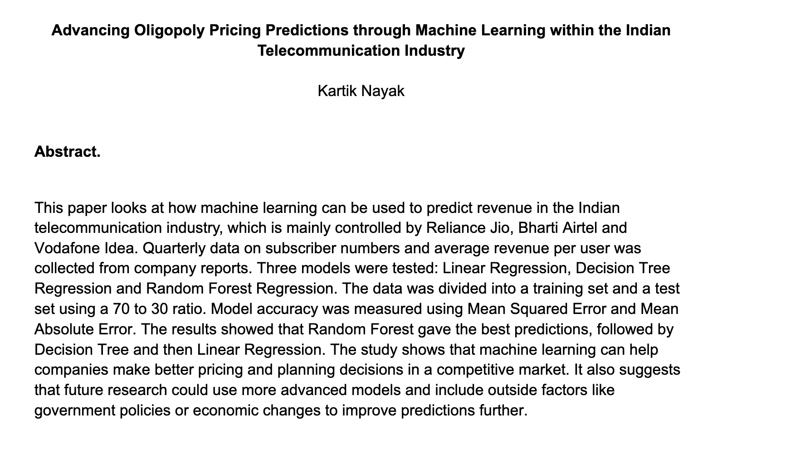

Machine Learning for Telecommunications Pricing
Conducted independent research on India’s telecommunications market, applying regression, decision-tree, and random-forest models to subscriber and revenue data. The project combined machine learning with economic analysis to evaluate pricing strategies and market sustainability.
Read my paper ↗